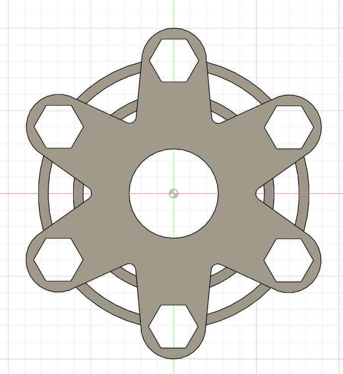

Computer Aided Design
Computer Graphic (11 May)
Computer graphics is sub-divided into 2 categories. Raster Images and also Vector Images.
- Raster Images
- deal with pixels on the screen. It is used mainly for rendering images (e.g. Photographs). Images are represented by “dots” or “pixels” in a set resolution (number of dots/pixels per inch).
- Characterised by becoming fuzzy as you zoom/enlarge the image. As the image is represented by dots, as you enlarge the image the dots become bigger.
- Mainly used for photographs and image representation.
- Important resoultions (measured as dpi (dots per inch)), the higher the amount of memory required to store the image.
- 72 dpi Applie/Mac screen resolution
- 96 dpi Windows screen resolution
- 300 dpi min Printer resolution
- Common raster file formats include - jpg/jpeg (Joint Photographic Experts Group) OR png (Portable Network Graphics)
- Some softwares you can look into inlcudes:
- Vector Images
- Uses mathematical functions or algorithms to display images on the screen. e.g. a line is represented by two points and an equation to draw the line between points.
- Characterised by clean lines/edges and the ability to zoom in/out as much as you want without distortion, as each image is “drawn” using an algorithm.
- Great for logos, signs, fancy text and design files.
- As such, you require specific software to handle each image type, and some are proprietary, though some standards exist.
- Common vector file formats include - dxf (AutoCAD Drawing Exchange Format) OR svg (Scalable Vector Graphics) OR STEP (STEP. ISO 10303 for 3D Objects)
- Some softwares you can look into inlcudes:
This week, we were also introduced to Gimp, a free raster graphic editing software, similar to that of Adobe Photoshop.We were told to pick any picture and to remove and change its background. Here is how I did it.
Gimp
The photo below shows the final product of my GIMP assignment. There will be a link that will bring you to a page showing the steps that i took.
Gimp Tutorial
Autodesk Fusion 360
For this lesson we were also introduced to Fusion 360, an Integrated CAD, CAM, and CAE software. You can consolidate your product development process. Unify design, engineering, electronics, and manufacturing into a single platform.
It is similar to AutoCAD or Inventor. However this program is free for educational use, provided you sign up (using your email) as a registered student of Singapore Polytechnic. It is easy to learn and master as there are alot of tutorials online even from Autodesk itself.
We were given our first assignments to get used to the software. Here is my documentation on it:
Exercise 1Exercise 2
Exercise 3
Once we were more comfortable with the software, we were given another assignment on the 15th of May, which was to design our own Fidget Spinner and our own Keyring Nametag
Fidget Spinner
Below is my finished fidget spinner design and also the link to the steps I took to make the spinner.
Spinner Tutorial
Keyring Nametag
The photo below shows the final design of my KEYRING design along with the link to the steps i took in making it.
Keyring Tutorial
3D Modelling (18 May)
For this lesson, we were taught the different techniques on 3D modelling such as revolution, lofting and sculpting. We were then tasked to design our own Knight Chess Piece with reference. Here is my documentation on how i did it:
Knight Chess Piece
The photo below shows the end product of my KNIGHT PIECE as well as the link with the steps i took in making it.

Knight Piece Tutorial
Fusion 360 Features (22 May)
For this lesson, we were taught on different Fusion 360 features. One particular one is called Parametric Modelling.
Parametric Modelling
This feature allows you to define your drawings/sketches using variables. This feature can be found at Modify > Change Parameters.
- The workflow is as follows:
- Draw your sketch
- Use Modify > Change Parameters to define variables for the dimensions
- Apply the variables to the dimensions
- Should you change your paramters, the sketch/object changes.
- In the parameters box you define:
- the name of the parameter
- the type of the parameter e.g. mm
- a value (which can be changed)
- a comment to identify the parameter created
You will be able to see how I implemented this feature with the assignment given to me which is to make my own laptop stand.
Laptop Stand
The photo below shows the end product of my LAPTOP STAND as well as the link which shows the steps i took in making it.

Click to enlarge
Laptop Stand TutorialParametric Box (29 May)
To continue our understanding on parametric modelling, we were tasked to design our own type of box while implementing the parametric tool. Forthis, I made two designs, The first one being the one where i followed the video tutorial given and the second one being my own design where i implemented all the things i learned from designing the first box.
Below is the finished product of the first box i made and the link showing the steps I took in designing it:

Click to enlarge
Simple Slot Box TutorialMy Own Design
Basing off the previous design, i made my own box design with quick steps below:
{kind=link}
Click to enlarge
My Box Tutorial